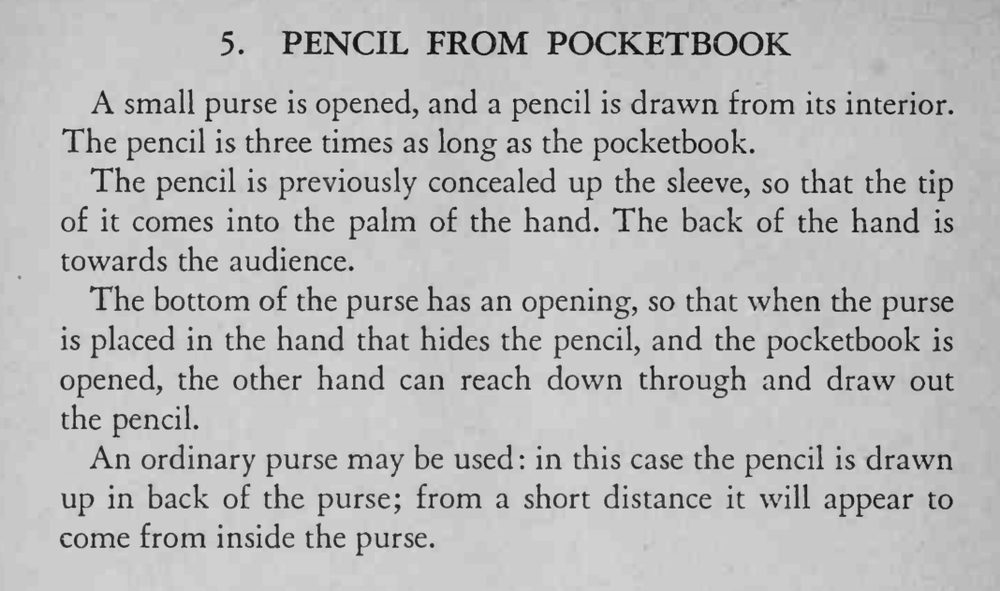

魔术师打开一只小钱包，竟从中抽出一支比钱包长三倍的铅笔。
藏笔的手手背始终朝向观众；钱包开口要藏在掌心里，抽笔动作要自然、连贯。

A small purse is opened, and a pencil is drawn from its interior. The pencil is three times as long as the pocketbook. The pencil is previously concealed up the sleeve, so that the tip of it comes into the palm of the hand. The back of the hand is towards the audience. The bottom of the purse has an opening, so that when the purse is placed in the hand that hides the pencil, and the pocketbook is opened, the other hand can reach down through and draw out the pencil. An ordinary purse may be used: in this case the pencil is drawn up in back of the purse; from a short distance it will appear to come from inside the purse.